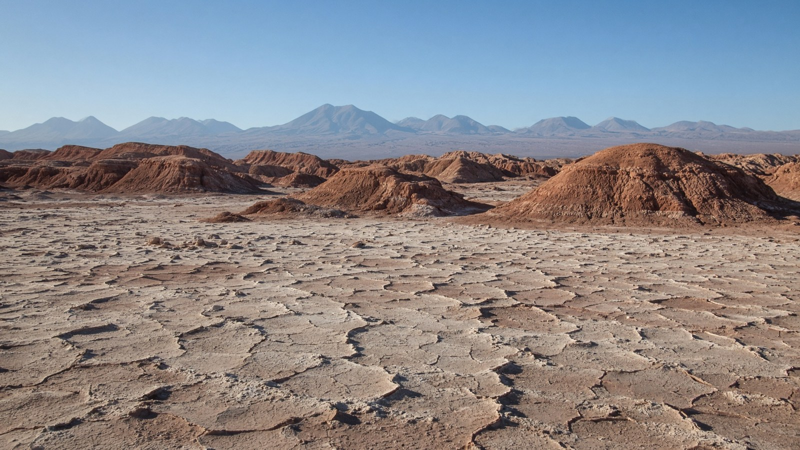

الأمريكتان
تشيلي
Chile
شريط أنديزي من الصحراء إلى باتاغونيا.
- العاصمة
- سانتياغو
- نظام الحكم
- جمهورية
- التأسيس / الاستقلال
- 12 فبراير 1818
- النوع
- جمهورية
منذ التأسيس
استقلت تشيلي في 12 فبراير 1818. جمهورية عاصمتها سانتياغو.
معالم
- طبيعةصحراء أتاكاما
أشد الجفاف.
- طبيعةتوريس ديل باين
باتاغونيا.
- معمارفالبارايسو
بيوت ملونة.